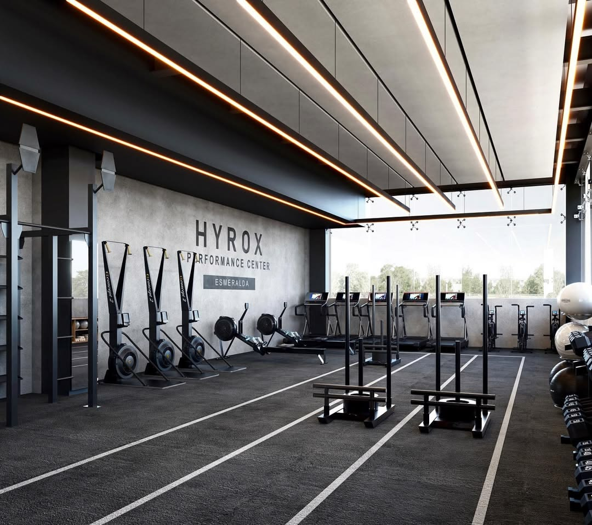
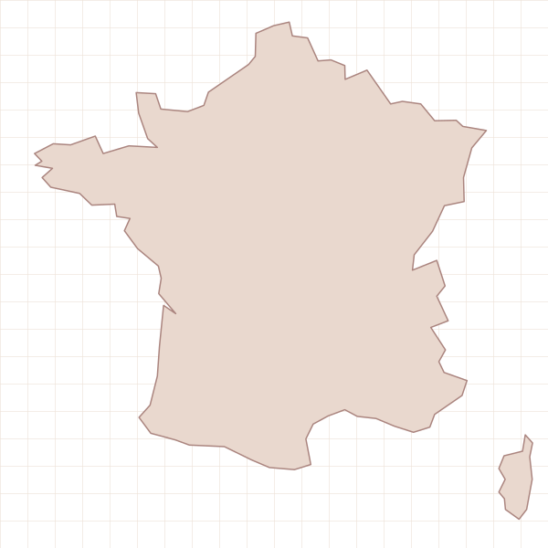
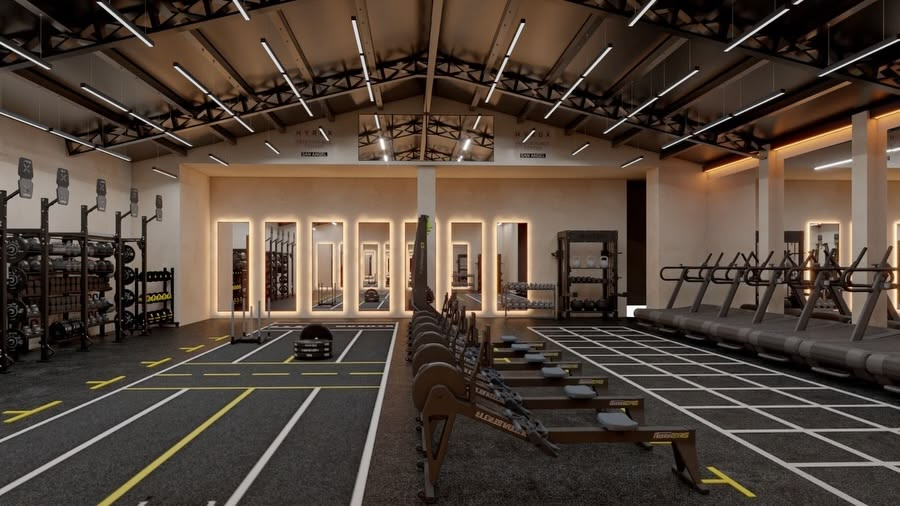
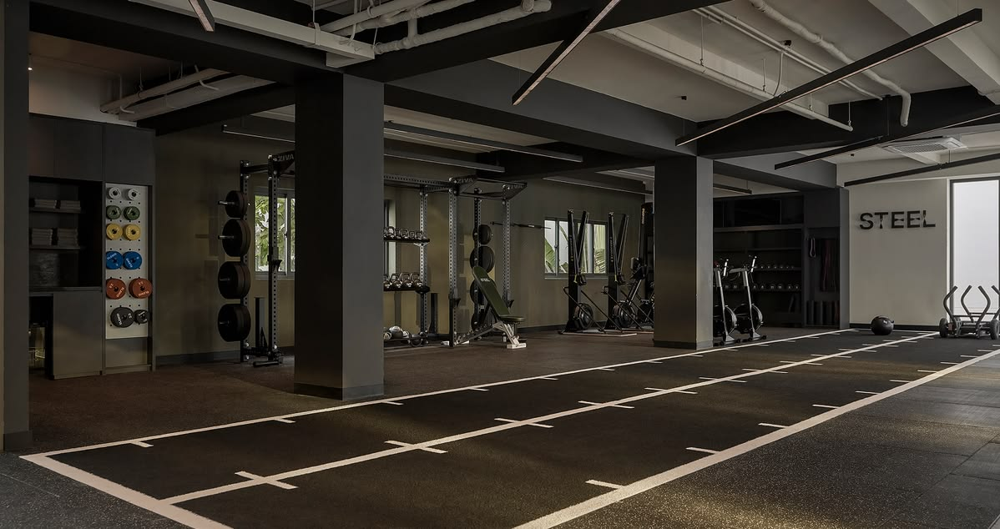
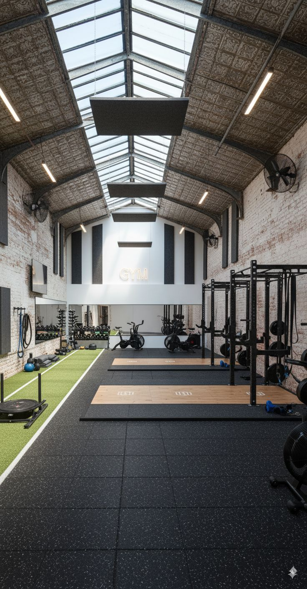
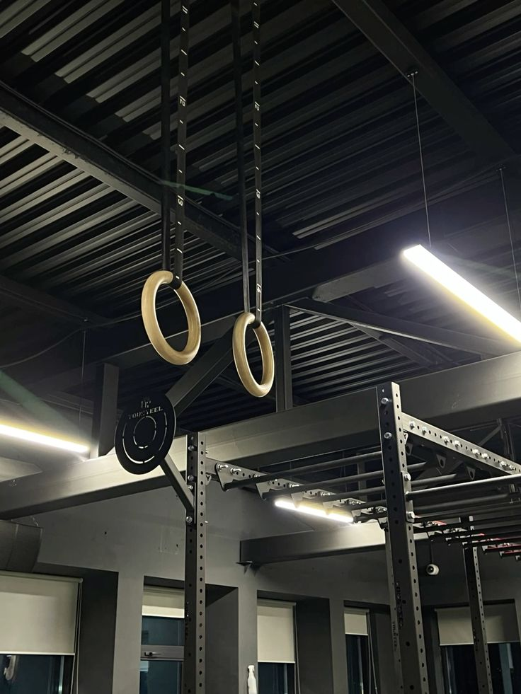
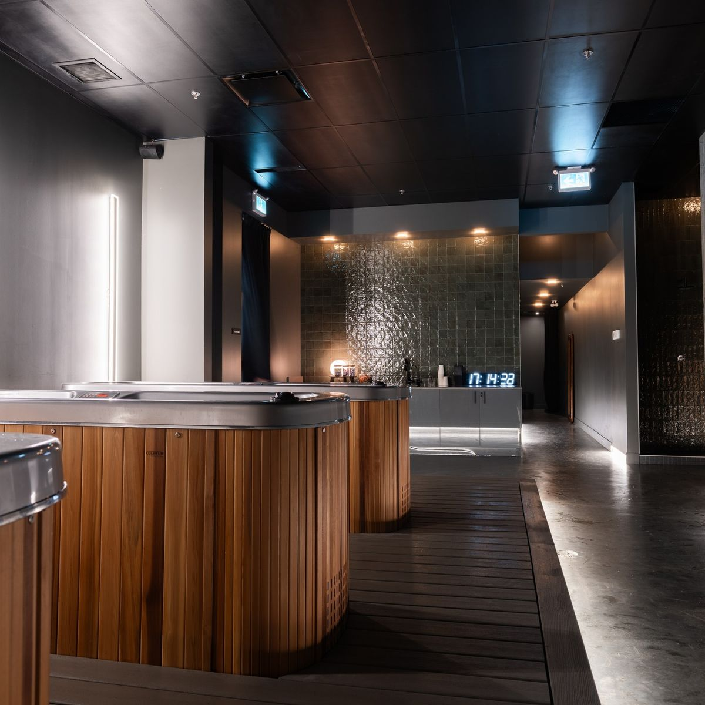
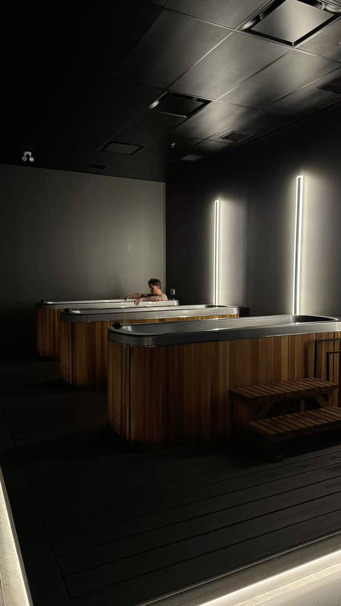
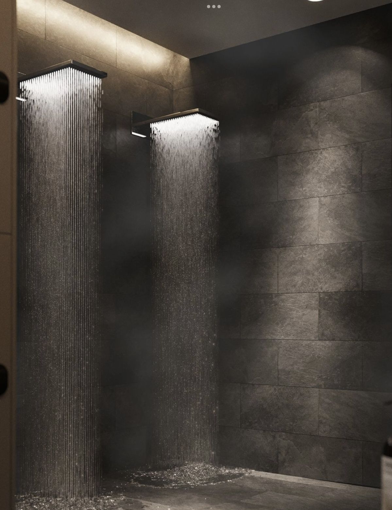
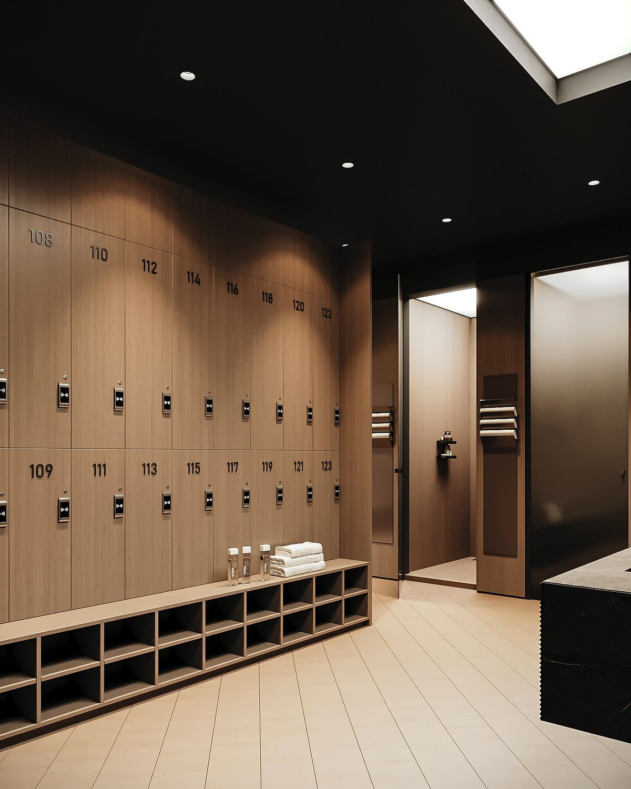

Paris
- Quartier
- Nation
- Adresse
- Adresse à confirmer
- Horaires prévisionnels
- Lundi au vendredi · 7 h à 21 h
Samedi · 9 h à 13 h
Dimanche · fermé
Le réseau Iron Yard
20 implantations envisagées en France. Trouve la salle de ton choix et découvre l’esprit Iron Yard.
Voir les 20 clubs ↓
Les 20 implantations sont envisagées dans le cadre de ce projet fictif. Montreuil sert de club pilote pour le planning et les stages.

Enchaîne les ateliers HYROX sur les pistes de sled et travaille ton cardio sur les rameurs, les vélos et les tapis de course.
Pour la force et l’haltérophilie, retrouve des cages, des plateformes, des barres, des disques et des haltères. Les anneaux permettent aussi de travailler au poids du corps.
Demander un essai



Après ta séance, tu peux profiter de la chaleur sèche du sauna ou de la vapeur du hammam, te détendre dans le bain chaud ou te rafraîchir dans le bain froid. Des douches et des vestiaires avec casiers sont également à disposition des adhérents.



